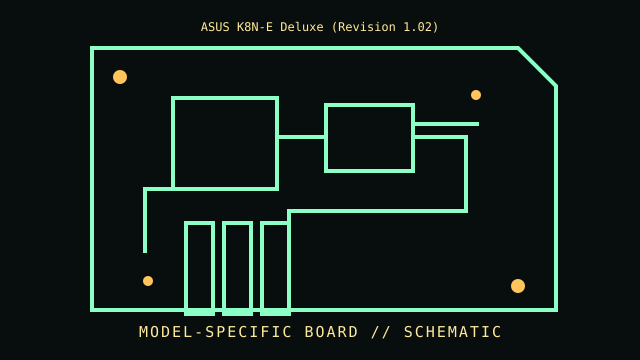

[ INDIVIDUAL COMPONENT // MOTHERBOARDS ]
ASUS K8N-E Deluxe (Revision 1.02)
Socket 754 / NVIDIA nForce3 250Gb, 2004. This entry documents one exact board model/revision; its specifications are not interchangeable with similarly named variants.

REVISION WARNING: Confirm the PCB silk-screen, assembly/AA code and firmware ID on the actual board. Where documentation does not identify one PCB spin, this record states the exact documented model and explains the revision distinction below.
Specifications
| Exact model / revision | K8N-E Deluxe PCB revision 1.02 |
|---|---|
| CPU / socket | Socket 754 Athlon 64/Sempron models per ASUS CPU support list and BIOS minimum |
| Chipset / platform | NVIDIA nForce3 250Gb single-chip chipset |
| Memory | Three DDR DIMM sockets; single-channel DDR400/333/266 support, capacity and rank rules per manual |
| Form factor | ATX |
| I/O and expansion | AGP 8x, PCI, four SATA, PATA, Gigabit Ethernet, USB 2.0, FireWire and integrated audio |
| Firmware compatibility | ASUS Award BIOS; later CPU support requires listed BIOS version; onboard SATA/RAID option ROM is firmware-dependent |
Compatibility and revision pitfalls
K8N-E Deluxe is Socket 754, not a Socket 939 K8N board. Check revision and ASUS CPU list; DDR population is constrained by the integrated memory controller and DIMM ranks. BIOS update does not change socket or channel topology.
Socket fit alone is not proof of support. Confirm the manufacturer CPU support list, the board's minimum BIOS, memory population table, and exact chassis/power requirements before operation.
Preservation notes
Record BIOS ID and SATA mode/array metadata before CMOS reset. Preserve the bundled I/O shield and model-specific SATA/IDE cabling; inspect AGP latch, capacitors and nForce chipset cooling.
Record provenance, date/serial codes, board and firmware revision, known repairs and test conditions. Photograph labels and connectors before cleaning or component removal; retain original firmware and configuration data when possible.
Sources & further reading
- ASUS K8N-E Deluxe support — model manualManufacturer manual and CPU support files for this exact board model.
- ASUS K8N-E Deluxe BIOS/support archiveOfficial BIOS revisions and release notes; check processor minimum BIOS.
Manufacturer manuals, CPU lists and archived primary documents take precedence over reseller summaries. If an archived support page omits a revision-specific file, do not assume another revision's firmware is compatible.